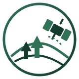

◈
Earth Observation
Using satellite data to monitor forest cover, disturbances and ecosystem change.

Researcher in
I study forest dynamics and ecosystem responses to climate change using remote sensing, GIS and field data.
Research focus
My work combines satellite remote sensing, field observations and advanced spatial analysis to monitor forest ecosystems, assess their condition and support conservation and sustainable management.
Learn more about my research →Using satellite data to monitor forest cover, disturbances and ecosystem change.
Collecting field data to understand forest structure, diversity and ecology.
Building spatial models to predict patterns and assess ecosystem services.
Featured projects
Monitoring forest disturbances in Mediterranean forests using Sentinel-2 time series.
Assessing the impact of climate variability on forest productivity and growth.
Spatial prioritization for conservation based on biodiversity and habitat suitability.
Latest publications
deadtrees.earth — An open-access and interactive database for centimeter-scale aerial imagery to uncover global tree mortality dynamics, https://doi.org/10.1016/j.rse.2025.115027.
Maps & geospatial work
This section is ready for interactive maps, remote-sensing products, study areas and WebGIS applications.
About
Gabriele Giuseppe Antonio Satta, PhD, works at the intersection of remote sensing, forest ecology and geospatial analysis. This site is designed as a living research portfolio and can be expanded with publications, maps, datasets, projects, teaching activities and collaborations.